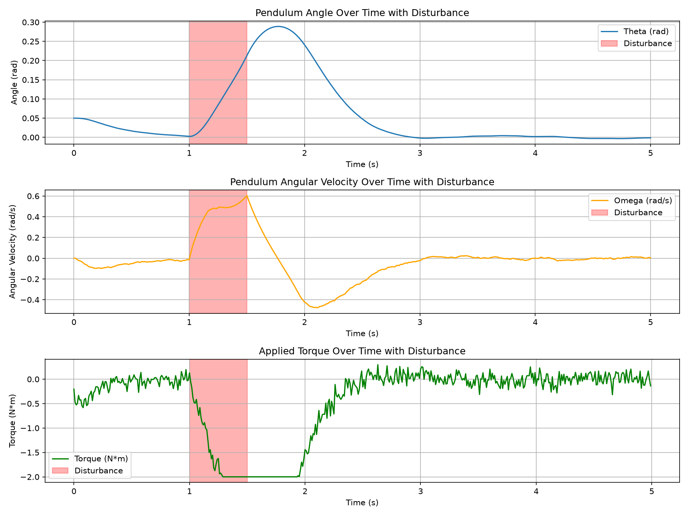

Simulation-based safety evaluation
Developing a closed-loop inverted-pendulum case study to examine how sensor noise, actuator limits and external disturbances affect controller safety.
- Define failure through an angle safety bound and track the minimum safety margin along each trajectory.
- Compare Monte Carlo and importance sampling for failure-probability estimation, logging disturbances and random seeds to replay failures.
Python · Monte Carlo · Importance sampling
